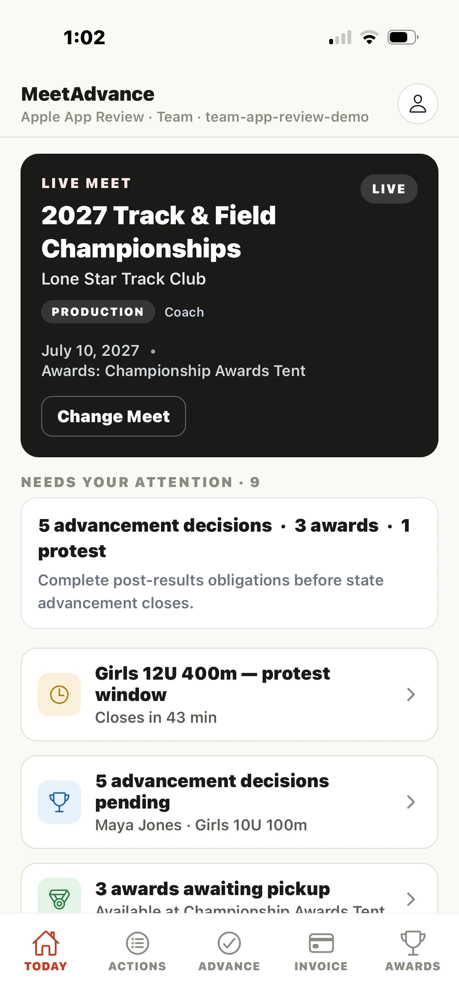
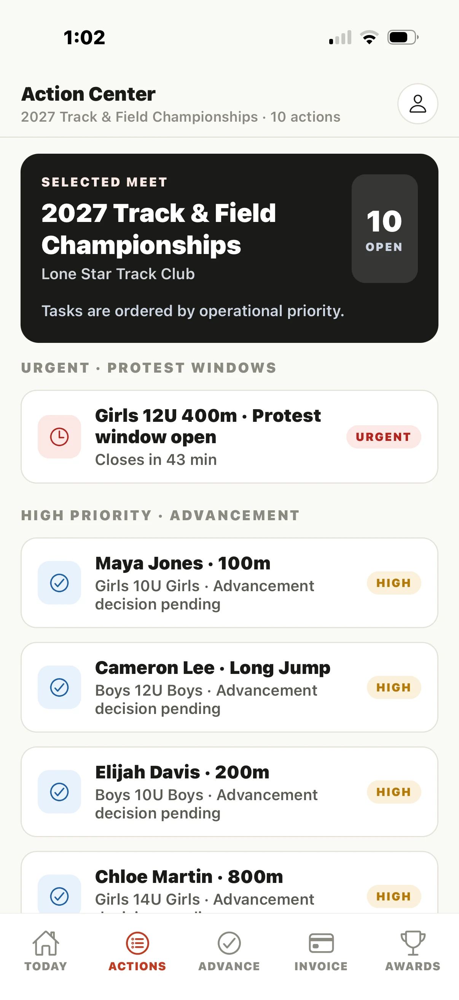
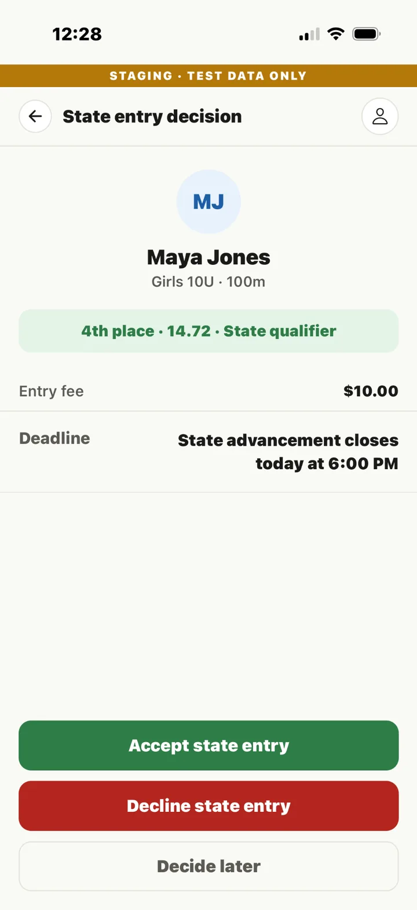
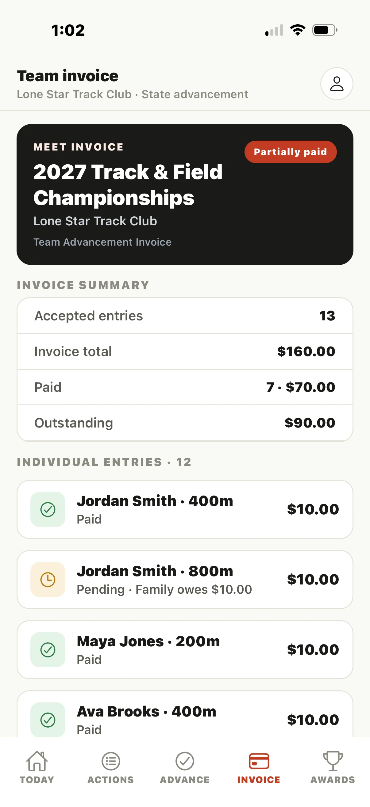
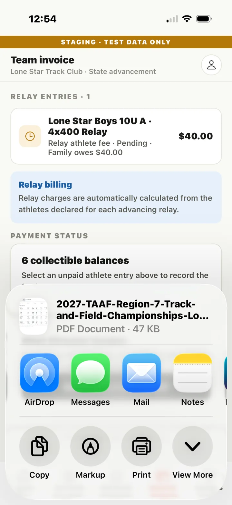
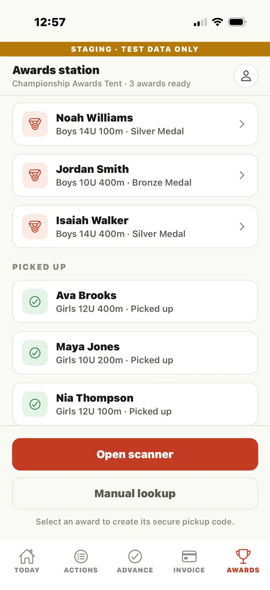
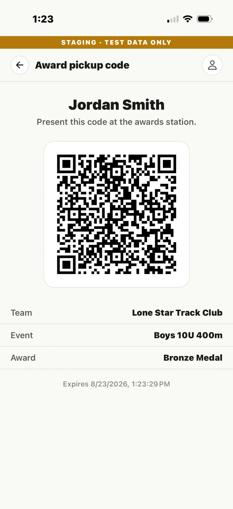

Meet Operations
Keep the selected meet, deadlines, protest windows, and unresolved work visible from one operational view.
- Meet-scoped dashboard
- Prioritized Action Center
- Protest-window tracking
Post-results operations, connected
MeetAdvance manages what happens next—advancement decisions, entry-fee reconciliation, itemized team invoices, time-sensitive action items, and awards operations.


Where MeetAdvance starts
MeetAdvance starts where the results system stops.
Current pilot build
The current mobile build focuses on the post-results work coaches, meet directors, and organizations must complete before the meet is truly closed out.
Keep the selected meet, deadlines, protest windows, and unresolved work visible from one operational view.
Turn qualifying placements into a consistent state-entry decision workflow with fee and deadline context.
Connect accepted entries to itemized team financial obligations without rebuilding them in a spreadsheet.
Track awards readiness and use secure or manual verification workflows at the awards station.
See the current mobile workflow
These are real screens from MeetAdvance's isolated staging environment using fictional test data.
Time-sensitive protest windows and pending advancement decisions rise to the top instead of living in separate spreadsheets, messages, or memory.
Qualifying place, mark, entry fee, and advancement deadline are visible before the coach accepts, declines, or decides later.

Accepted individual and relay entries become itemized obligations with paid and outstanding status that can be reviewed by the team and meet staff.

Create a professional Team Advancement Invoice and use the device's standard share sheet to send, save, AirDrop, or print it.

See which awards are ready or already picked up, then generate a temporary secure credential tied to the athlete, team, event, and award.


Current vs. planned
MeetAdvance is in active mobile testing. Current capabilities are separated from planned organization-level expansion so pilot discussions stay grounded in what can be validated now.
Next major update
MeetAdvance is expanding upstream of post-results operations to help governing organizations deter age-division violations, protect verified athlete identity data, and create a traceable eligibility process before and during competition.
Calculate permitted age divisions from governing-body rules and lock verified birth data against unauthorized changes.
Separate club-entered information from independently verified eligibility and issue a reusable athlete identity credential.
Bring verified eligibility into meet operations with identity checks, formal challenges, and organization-level compliance visibility.
Planned roadmap capability. Final rules, verification authority, privacy controls, and deployment scope will be configured with the governing organization.
Low-risk adoption
MeetAdvance does not need to replace the systems already running the meet. A controlled pilot can focus on one defined workflow, measure the outcome, and expand only if the evidence supports it.
View the Controlled Pilot ModelPilot MeetAdvance
Start with a controlled regional pilot using a defined post-results handoff, agreed success measures, and a post-event review.